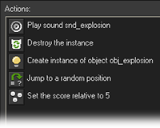
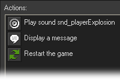

Tutorial
Page 8 of 13
Enemies
Let us now make the first enemy. It is a small plane that simply flies downwards. It does not shoot but when it hits the main plane the game is lost. Again we create a sprite for the
enemy plane with it's origin in the center (16, 16) and an object. In the creation event we set the vertical speed to 4 to make the plane fly downwards. When the plane reaches the bottom
of the room we make it reappear at a random place at the top of the room, in exactly the same way as we did for the islands. You should know how to do this by now!
We need to define two important collision events for the enemy plane: the collision event with the bullet, which should destroy the enemy plane, and the collision event with the
player controlled plane which should destroy that plane and end the game.
Before we go ahead with these collisions however, we first of all we need a sound for a small explosion and a sprite that indicates the explosion. To create a sound, press Add sound
and load some nice explosion sound (like the one included in the assets folder), and for the explosion we need a little sprite. Like for the enemy plane we set the origin to (16,16). We also
create an explosion object and give it the explosion sprite. It does nothing except that once the complete explosion animation has played it must destroy itself. There is an event called
Animation end for this under the other events, so add this event and into it you should drag the destroy instance action.
When the sound and the explosion object are ready we can fill in the collision event for the enemy plane with the bullet. The following actions are required. First of all we play the explosion
sound. Next we destroy the bullet. For this use the action to destroy an instance but, at the top, indicate that it should apply to the Other instance, which is the bullet in this case.
Next we create the explosion object, relative at position (0,0), that is, at the same place as the enemy plane. We do not destroy the enemy plane! Instead we move it to a random position
above the room such that it looks as if a new enemy plane is coming. Finally, we set the score relative to 5. We need relative here because we want to add 5 points to the score; we do not
want to set the score to 5. The event should look like this:

Next we need to handle the collision with the main plane. Again we will need an explosion sprite (a bit bigger this time) and an exploding sound (a bit louder this time). We add the sound to the
game and we make a sprite for the explosion. Again we create an explosion object for it, but this object is a bit more elaborate than the other explosion object because it will also handle the
ending of the game.
In its Animation end event we do a few things. We play a sound, then we inform the player that he has died using the Display a Message from the "main2" tab, and finally,
we restart the game.

In the collision event of the enemy plane and the main plane, we change the main plane, that is, the other instance, into an explosion. Also we play the exploding sound and we destroy the enemy plane.
What remains is to place an enemy plane in the room but we will do this slightly different. A good game becomes more difficult all the time. So we like to start with just one enemy plane and get more of
them over time. To this end we create one more object, which we will call controller_enemy. It will control the creation of enemy planes. We make the object invisible during the game by unchecking
the box labeled Visible. A sprite is not required for it.
In its creation event we create an enemy place at a random location just above the room. This will be the first enemy. We also set the alarm clock to 200. In the event for this alarm clock we create
another enemy plane and set the alarm clock again, but this time to 500. That is all. The effect is that at the beginning of the game there is one enemy plane.
After 200 steps, that is, about seven seconds, a second enemy plane appears. After about 15 seconds, a third plane appears, etc. (The reason that we let the second plane appears faster than the other
ones is because the game with just one enemy plane is too boring.) Place one instance of the controller object in the room and we are done.
This finishes the second version of 1945. We have a playable game with an enemy.